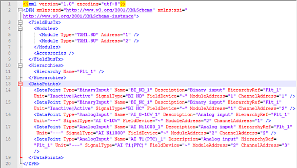
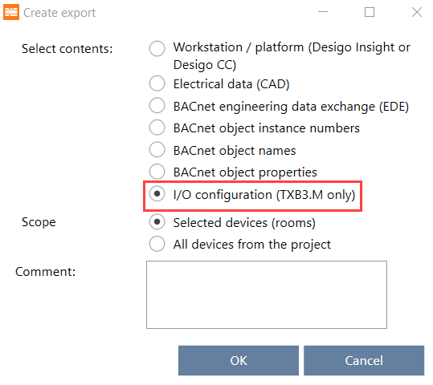
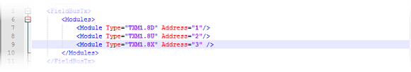
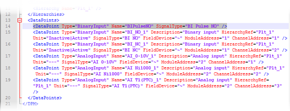
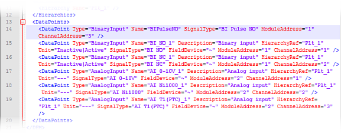
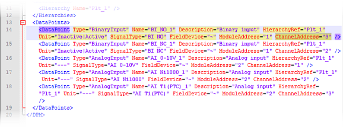

修改模块和数据点 (XML)
以下是通过 xml 数据导出和导入操作现有 I/O 配置的示例。
I/O 配置包含以下模块和数据点。
TXM1.8D | 数据点 | 姓名 | 信号类型 | 地址（模块/channel） |
|---|---|---|---|---|
| 二进制输入 | BI_NO_1 | 接通/off，触点常开 | 1/1 |
二进制输入 | BI_NC_1 | 接通/off，触点常闭 | 1/2 |
TXM1.8U | 数据点 | 姓名 | 信号类型 | 地址（模块/channel） |
|---|---|---|---|---|
| 模拟输入 | AI_0-10V_1 | 0...10 V DC | 2/1 |
模拟输入 | AI Ni1000_1 | 温度 (LG-Ni1000 -50...180 °C) | 2/2 | |
模拟输入 | AI T1(PTC)_1 | 温度 (PTC) | 2/3 |
xml 导出看起来像这样。

Adding modules without data points
- Go to Building > Building structure.
- Select a device or a hierarchy object.
- Right-click and select Create export.
- The Create export dialog box opens.
- Select the type of content to export:

Exporting modules and I/Os (for TXB3.M only) - Open the xml file with an xml editor or any text editor.
- In the Modules element list (line 4…7), add another module, for example:
<Module Type="TXM1.8X" Address="3" /> - Your xml now looks like this:

- Save the xml file.
- Import the xml file to your device.
Importing modules and I/Os (for TXB3.M only)
- You have added a module to your I/O configuration via xml export and import. The newly added module does not contain any data points yet.
Adding data points without module assignment
- Export the I/O configuration of your device.
Exporting modules and I/Os (for TXB3.M only) - Open the xml file with an xml editor or any text editor.
- In the <DataPoints> element list (line 13…19), add another data point, for example:
<DataPoint Type="BinaryInput" Name="BIPulseNO" SignalType="BI Pulse NO" /> - Your xml now looks like this:

- Save the xml file.
- Import the xml file to your device.
Importing modules and I/Os (for TXB3.M only)
- You have added a data point to a module via xml export and import.
Adding data points with module assignment
- Export the I/O configuration of your device.
Exporting modules and I/Os (for TXB3.M only) - Open the xml file with an xml editor or any text editor.
- In the <DataPoints> element list (line 13…19), add another data point, for example:
<DataPoint Type="BinaryInput" Name="BIPulseNO" SignalType="BI Pulse NO" ModuleAddress="1" ChannelAddress="3" /> - Your xml now looks like this:

- Save the xml file.
- Import the xml file to your device.
Importing modules and I/Os (for TXB3.M only)
- You have added a data point and assigned it to a module via xml export and import.
Changing existing data point values
- Export the I/O configuration of your device.
Exporting modules and I/Os (for TXB3.M only) - Open the xml file with an xml editor or any text editor.
- In the <DataPoints> element list (line 13…19), make a change to a data point. For example, change the channel address of the first data point in the list so it appears in the third position instead of the first position:
<DataPoint Type="BinaryInput" Name="BI_NO_1" Description="Binary input" HierarchyRef="Plt_1" Unit="Inactive|Active" SignalType="BI NO" FieldDevice="~" ModuleAddress="1" ChannelAddress="3" /> - Your xml now looks like this:

- Save the xml file.
- Import the xml file to your device.
Importing modules and I/Os (for TXB3.M only)
- You have changed a data point value via xml export and import.